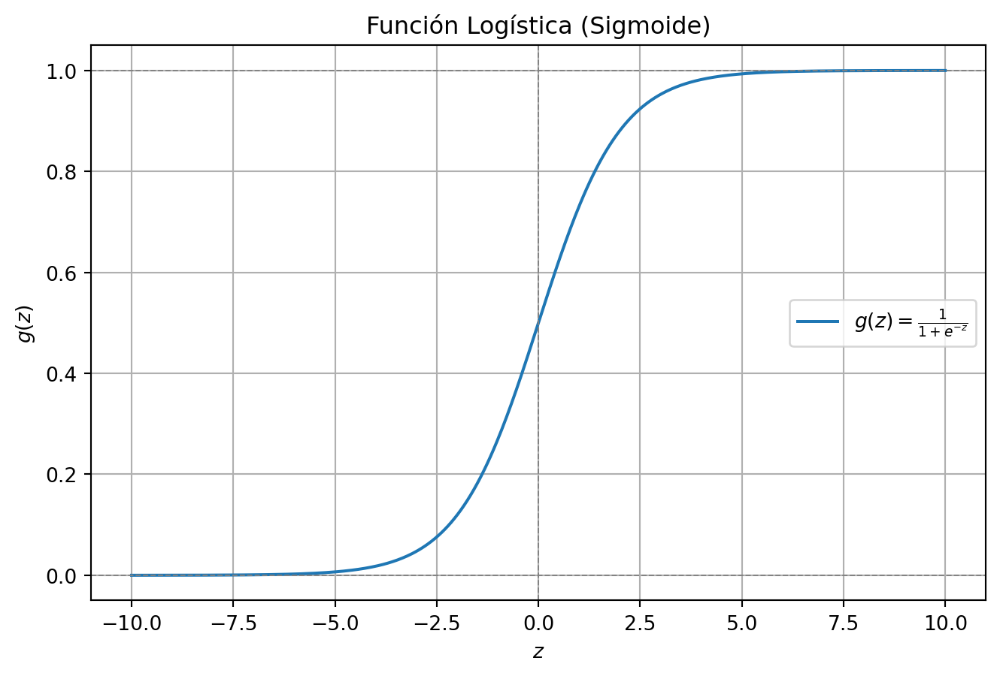

En el modelo de regresión lineal, las variables predictoras \(\XX\in\RR^p\) se relacionan con la variable respuesta \(Y\in\RR\) mediante la ecuación
\[
Y = \theta_0+\theta_1 X_1+\theta_2 X_2+\cdots+\theta_p X_p + \varepsilon,
\]
donde \(\bftheta=(\theta_0,\theta_1,\cdots,\theta_p)\in\RR^{p+1}\) es el conjunto de parámetros del modelo y \(\varepsilon\) es un término de error que captura efectos no modelados (como características omitidas o ruido aleatorio). Podemos escribir más abreviado el modelo bajo la convención \(x_0=1\), como:
\[
Y = \bftheta^T \XX + \varepsilon,
\]
Además, se asume que el error aleatorio \(\varepsilon\) se distribuye según una distribución Normal con media cero y varianza \(\sigma^2\), esto es
Ahora debemos aplicar el principio de máxima verosimilitud, que consiste en elegir \(\bftheta\) de forma que los datos sean lo más probables posible (es decir, maximizar \(L(\bftheta)\)). Sin embargo, es más conveniente maximizar el logaritmo de la verosimilitud, lo cual se denota con \(\ell(\bftheta)\). Resulta en este caso
lo cual es la función de costo asociada a mínimos cuadrados. El paramétro \(\hat{\bftheta}\) que minimiza dicha función está dado en forma cerrada por
\[\hat{\bftheta}=(X^TX)^{-1}X^T\vec{y},\]
donde \(X\in\RR^{n\times p}\) es la matriz de datos y \(\vec{y}\) el vector de respuestas.
1.2 Algoritmo LMS
Un algoritmo de búsqueda del minimizador de \(J(\bftheta)\) comienza con un valor inicial para \(\bftheta\) y, luego, realiza una actualización iterativa de \(\bftheta\) que pretende hacer el valor de \(J(\bftheta)\) cada vez más pequeño. Específicamente, consideremos el algoritmo de descenso de gradiente que utiliza la siguiente actualización:
(Esta actualización se realiza simultáneamente para todos los valores de \(j = 0, \dots, p\)). Aquí, \(\alpha\) se llama tasa de aprendizaje. Este es un algoritmo natural que repetidamente da un paso en la dirección del descenso más pronunciado de \(J\).
Para implementar este algoritmo, necesitamos calcular el término de la derivada parcial en el lado derecho. Primero trabajemos en el caso donde solo tenemos un ejemplo de entrenamiento \((\xx, y)\), de manera que podamos omitir la suma en la definición de \(J\). Tenemos:
Esta regla se llama la regla de actualización LMS (least mean squares), y también se conoce como la regla de aprendizaje Widrow-Hoff.
La magnitud de la actualización es proporcional al término de error \((y - \bftheta^T\xx)\). Si encontramos un ejemplo de entrenamiento en el que nuestra predicción coincide casi con el valor real de \(y\), entonces el cambio en los parámetros será mínimo.
Para un conjunto de entrenamiento \(\{\xx_i,y_i\}_{i=1}^n\), es fácil ver que la regla se puede escribir vectorialmente como
Este método analiza cada ejemplo en todo el conjunto de entrenamiento en cada paso y se denomina descenso de gradiente por lotes (batch gradient descent).
1.3 Ejemplo
El conjunto de datos California Housing incluye información detallada sobre diversas características socioeconómicas y geográficas de diferentes áreas residenciales en California. El objetivo es predecir el valor medio de las viviendas en cada zona, a partir de factores como la densidad poblacional y los ingresos medios de los hogares, entre otros.
La clase LinearRegression usa la ecuación normal \(\hat{\bftheta}=(X^TX)^{-1}X^T\vec{y}\). Para usar descenso de gradiente, la alternativa es la clase SGDRegressor: esta efectúa descenso de gradiente estocástico, que consiste en calcular el gradiente utilizando un dato a la vez.
Cantidad de predictores: 8
Intercepto: [2.0572917]
Coeficientes del modelo: [ 0.81259204 0.1147773 -0.250275 0.30239761 0.00232812 -0.13650495
-0.90931554 -0.89061164]
2 Regresión logística
Ahora hablemos sobre el problema de clasificación. En este caso, la variable respuesta toma valores discretos, es decir \(Y\in\{0,1,\cdots,r\}\). En particular, nos enfocaremos en el problema de clasificación binaria en el que \(Y\in\{0,1\}\).
Por ejemplo, si estamos tratando de construir un clasificador de spam para correos electrónicos, entonces una observación \(\xx\) contendrá características de un correo electrónico, mientras que su etiqueta\(y\) será 1 si es spam o 0 en caso contrario.
Podríamos abordar el problema de clasificación ignorando el hecho de que \(y\) toma valores discretos, y usar nuestro antiguo algoritmo de regresión lineal para tratar de predecir \(y\) dado \(\xx\). Sin embargo, esto suele tener un pobre desempeño y además no tiene sentido que la predicción para un valor de \(\xx\) sea un valor fuera del rango de 0 y 1.
Para resolver este problema, podemos usar la regresión logística, donde la predicción se realiza con una función logística o sigmoide.
2.1 Función logística
En vez de trabajar con \(h(\xx)=\bftheta^T\xx\) (regresión lineal), utilizaremos la siguiente expresión:
La siguiente es una representación de \(g(z)\). Observar que \(g(z)\) tiende hacia 1 cuando \(z \to \infty\), mientras que tiende hacia 0 cuando \(z \to -\infty\). Además, \(g(z)\) está acotada entre 0 y 1.
Código
import numpy as npimport matplotlib.pyplot as plt# Definir la función sigmoidedef sigmoid(z):return1/ (1+ np.exp(-z))# Crear valores de z para graficarz = np.linspace(-10, 10, 500)g_z = sigmoid(z)# Graficar la función sigmoideplt.figure(figsize=(8, 5))plt.plot(z, g_z, label="$g(z) = \\frac{1}{1 + e^{-z}}$")plt.axhline(1, color="gray", linestyle="--", linewidth=0.7)plt.axhline(0, color="gray", linestyle="--", linewidth=0.7)plt.axvline(0, color="gray", linestyle="--", linewidth=0.7)plt.title("Función Logística (Sigmoide)")plt.xlabel("$z$")plt.ylabel("$g(z)$")plt.legend()plt.grid()plt.show()

Lo de la derivada de la función logística mejor como ejercicio ?.
2.2 Estimación de parámetros
Entonces, dado el modelo de regresión logística, ¿cómo ajustamos \(\bftheta\)? Como antes, obtengamos el estimador de máxima verosimilitud a partir de un conjunto de supuestos probabilísticos. Supongamos que
¿Cómo maximizamos la verosimilitud? Similar a nuestra derivación en el caso de la regresión lineal, podemos usar ascenso por gradiente. Las actualizaciones estarán dadas por
donde \(x_{ij}\) es el \(j\)-ésimo elemento de la observación \(\xx_i\). Si comparamos esto con la regla de actualización de LMS, podemos notar una cierta similaridad entre los factores \((y_i-\bftheta^T\xx_i)\) y \((y_i-h_\bftheta(\xx))\). ¿Es esto coincidencia? Veremos este hecho cuando veamos los modelos lineales generalizados.
2.3 Ejemplo
El conjunto de datos Breast Cancer contiene información sobre 569 muestras de tejido mamario, con 30 características que describen propiedades de las células nucleares de los tumores. El objetivo principal es clasificar los tumores como benignos o malignos.
El método de Newton tal vez sea mejor plantearlo en actividad teórica?
Ejecutar el código
---title: "Regresión lineal y logística"lang: esformat: live-html: css: style.css toc: true toc-depth: 3 toc-location: left toc-floating: true code-tools: true # Mantiene las herramientas de código (copiar y plegar) code-copy: true # Habilita la opción de copiar código code-fold: true # Habilita el plegado de código code-highlight: true # Habilita el resaltado de sintaxis code-theme: monokai theme: cosmo execute: echo: true # Muestra el código ejecutado (si es necesario) warning: false number-sections: true view-source: false # Desactiva la opción "Ver código fuente"---::: {.hidden} $$\def\RR{\mathbb{R}}\def\xx{{\bf x}}\def\XX{{\bf X}}\def\bftheta{\boldsymbol{\theta}} $$ :::# Regresión lineal## Interpretación probabilísticaEn el modelo de regresión lineal, las variables predictoras $\XX\in\RR^p$ se relacionan con la variable respuesta $Y\in\RR$ mediante la ecuación$$Y = \theta_0+\theta_1 X_1+\theta_2 X_2+\cdots+\theta_p X_p + \varepsilon,$$donde $\bftheta=(\theta_0,\theta_1,\cdots,\theta_p)\in\RR^{p+1}$ es el conjunto de parámetros del modelo y $\varepsilon$ es un término de error que captura efectos no modelados (como características omitidas o ruido aleatorio). Podemos escribir más abreviado el modelo bajo la convención $x_0=1$, como:$$Y = \bftheta^T \XX + \varepsilon,$$Además, se asume que el error aleatorio $\varepsilon$ se distribuye según una distribución Normal con media cero y varianza $\sigma^2$, esto es$$\varepsilon^{(i)} \sim \mathcal{N}(0, \sigma^2).$$De esta manera, la densidad de $\varepsilon$ es$$p(\varepsilon) = \frac{1}{\sqrt{2 \pi \sigma^2}} \exp\left(-\frac{\varepsilon^2}{2 \sigma^2}\right),$$Esto implica que $Y|\XX\sim \mathcal{N}(\bftheta^T\XX,\sigma^2)$ o, lo que es lo mismo, que la función de densidad condicional está dada por$$p(y |\xx; \bftheta) = \frac{1}{\sqrt{2 \pi \sigma^2}} \exp\left(-\frac{(y-\bftheta^T \xx)^2}{2 \sigma^2}\right).$$---### Función de verosimilitudPara un conjunto de datos $\{\xx_i, y_i\}_{i=1}^n$ i.i.d., la función de verosimilitud es$$L(\bftheta) = \prod_{i=1}^{n} \frac{1}{\sqrt{2 \pi \sigma^2}} \exp\left(-\frac{(y_i - \bftheta^T\xx_i)^2}{2 \sigma^2}\right).$$Ahora debemos aplicar el principio de **máxima verosimilitud**, que consiste en elegir $\bftheta$ de forma que los datos sean lo más probables posible (es decir, maximizar $L(\bftheta)$). Sin embargo, es más conveniente maximizar el logaritmo de la verosimilitud, lo cual se denota con $\ell(\bftheta)$. Resulta en este caso$$\begin{align*}\ell(\bftheta) &= \log L(\bftheta) \\&= \log \prod_{i=1}^{n} \frac{1}{\sqrt{2 \pi}\sigma} \exp\left(-\frac{(y_i - \bftheta^T \xx_i)^2}{2 \sigma^2}\right) \\&= \sum_{i=1}^{n} \left[\log\frac{1}{\sqrt{2 \pi}\sigma} - \frac{1}{2 \sigma^2} (y_i - \bftheta^T \xx_i)^2\right]\\&= n \log \frac{1}{\sqrt{2 \pi}\sigma} - \frac{1}{2 \sigma^2} \sum_{i=1}^{n} (y_i - \bftheta^T \xx_i)^2\end{align*}$$Observar en esta última expresión que maximizar $\ell(\theta)$ es equivalente a minimizar$$J(\bftheta)=\frac{1}{2} \sum_{i=1}^{n} (y_i - \bftheta^T \xx_i)^2,$$lo cual es la función de costo asociada a mínimos cuadrados. El paramétro $\hat{\bftheta}$ que minimiza dicha función está dado en forma cerrada por$$\hat{\bftheta}=(X^TX)^{-1}X^T\vec{y},$$donde $X\in\RR^{n\times p}$ es la matriz de datos y $\vec{y}$ el vector de respuestas.## Algoritmo LMSUn algoritmo de búsqueda del minimizador de $J(\bftheta)$ comienza con un valor inicial para $\bftheta$ y, luego, realiza una actualización iterativa de $\bftheta$ que pretende hacer el valor de $J(\bftheta)$ cada vez más pequeño. Específicamente, consideremos el algoritmo de **descenso de gradiente** que utiliza la siguiente actualización:$$\theta_j := \theta_j - \alpha \frac{\partial}{\partial \theta_j} J(\bftheta).$$(Esta actualización se realiza simultáneamente para todos los valores de $j = 0, \dots, p$). Aquí, $\alpha$ se llama **tasa de aprendizaje**. Este es un algoritmo natural que repetidamente da un paso en la dirección del descenso más pronunciado de $J$.Para implementar este algoritmo, necesitamos calcular el término de la derivada parcial en el lado derecho. Primero trabajemos en el caso donde solo tenemos un ejemplo de entrenamiento $(\xx, y)$, de manera que podamos omitir la suma en la definición de $J$. Tenemos:$$\frac{\partial}{\partial \theta_j} J(\bftheta) = \frac{\partial}{\partial \theta_j}\left[ \frac{1}{2} (y-\bftheta^T\xx)^2\right] = (y-\bftheta^T\xx) x_j.$$Esto da la regla de actualización:$$\theta_j := \theta_j + \alpha (y-\bftheta^T\xx) x_j.$$Esta regla se llama la **regla de actualización LMS** (*least mean squares*), y también se conoce como la **regla de aprendizaje Widrow-Hoff**.La magnitud de la actualización es proporcional al término de error $(y - \bftheta^T\xx)$. Si encontramos un ejemplo de entrenamiento en el que nuestra predicción coincide casi con el valor real de $y$, entonces el cambio en los parámetros será mínimo.Para un conjunto de entrenamiento $\{\xx_i,y_i\}_{i=1}^n$, es fácil ver que la regla se puede escribir vectorialmente como$$\bftheta := \bftheta + \alpha \sum_{i=1}^{n} (y_i - \bftheta^T\xx_i) \xx_i.$$Este método analiza cada ejemplo en todo el conjunto de entrenamiento en cada paso y se denomina **descenso de gradiente por lotes** (*batch gradient descent*).## EjemploEl conjunto de datos `California Housing` incluye información detallada sobre diversas características socioeconómicas y geográficas de diferentes áreas residenciales en California. El objetivo es predecir el valor medio de las viviendas en cada zona, a partir de factores como la densidad poblacional y los ingresos medios de los hogares, entre otros.```{pyodide}import pandas as pdfrom sklearn.linear_model import LinearRegressionfrom sklearn.model_selection import train_test_splitfrom sklearn.preprocessing import StandardScalerfrom sklearn.metrics import mean_squared_errorfrom sklearn.datasets import fetch_california_housinghousing = fetch_california_housing()X = pd.DataFrame(housing.data, columns=housing.feature_names)y = pd.Series(housing.target, name='MedHouseVal')# Train-test split y escalado:X_train, X_test, y_train, y_test = train_test_split(X, y, test_size=0.2, random_state=42)scaler = StandardScaler()X_train_scaled = scaler.fit_transform(X_train)X_test_scaled = scaler.transform(X_test)# Regresion lineal:modelo = LinearRegression()modelo.fit(X_train_scaled, y_train) # Entrenamientoy_test_fit = modelo.predict(X_test_scaled) # PrediccionMSE = mean_squared_error(y_test, y_test_fit) # Evaluaciontheta0 = modelo.intercept_theta = modelo.coef_print(f"Cantidad de predictores: {X.shape[1]}")print(f"Intercepto: {theta0}")print(f"Coeficientes del modelo: {theta}")```La clase `LinearRegression` usa la ecuación normal $\hat{\bftheta}=(X^TX)^{-1}X^T\vec{y}$. Para usar descenso de gradiente, la alternativa es la clase `SGDRegressor`: esta efectúa **descenso de gradiente estocástico**, que consiste en calcular el gradiente utilizando un dato a la vez.```{python}import pandas as pdfrom sklearn.linear_model import SGDRegressorfrom sklearn.model_selection import train_test_splitfrom sklearn.preprocessing import StandardScalerfrom sklearn.metrics import mean_squared_errorfrom sklearn.datasets import fetch_california_housinghousing = fetch_california_housing()X = pd.DataFrame(housing.data, columns=housing.feature_names)y = pd.Series(housing.target, name='MedHouseVal')# Train-test split y escalado:X_train, X_test, y_train, y_test = train_test_split(X, y, test_size=0.2, random_state=42)scaler = StandardScaler()X_train_scaled = scaler.fit_transform(X_train)X_test_scaled = scaler.transform(X_test)# Regresion lineal con SGDRegressor:modelo = SGDRegressor(max_iter=1000, tol=1e-3, eta0=0.01, random_state=42)modelo.fit(X_train_scaled, y_train) # Entrenamientoy_test_fit = modelo.predict(X_test_scaled) # PrediccionMSE = mean_squared_error(y_test, y_test_fit) # Evaluaciontheta0 = modelo.intercept_theta = modelo.coef_print(f"Cantidad de predictores: {X.shape[1]}")print(f"Intercepto: {theta0}")print(f"Coeficientes del modelo: {theta}")```# Regresión logísticaAhora hablemos sobre el problema de clasificación. En este caso, la variable respuesta toma valores discretos, es decir $Y\in\{0,1,\cdots,r\}$. En particular, nos enfocaremos en el problema de **clasificación binaria** en el que $Y\in\{0,1\}$. Por ejemplo, si estamos tratando de construir un clasificador de spam para correos electrónicos, entonces una observación $\xx$ contendrá características de un correo electrónico, mientras que su **etiqueta** $y$ será 1 si es spam o 0 en caso contrario. Podríamos abordar el problema de clasificación ignorando el hecho de que $y$ toma valores discretos, y usar nuestro antiguo algoritmo de regresión lineal para tratar de predecir $y$ dado $\xx$. Sin embargo, esto suele tener un pobre desempeño y además no tiene sentido que la predicción para un valor de $\xx$ sea un valor fuera del rango de 0 y 1.Para resolver este problema, podemos usar la **regresión logística**, donde la predicción se realiza con una función logística o sigmoide.## Función logísticaEn vez de trabajar con $h(\xx)=\bftheta^T\xx$ (regresión lineal), utilizaremos la siguiente expresión:$$h_\bftheta(\xx) = g(\bftheta^T \xx) = \frac{1}{1 + e^{-\bftheta^T \xx}},$$donde$$ g(z) = \frac{1}{1 + e^{-z}} $$se llama **función logística** o **función sigmoide**.### Gráfico de la función logísticaLa siguiente es una representación de $g(z)$. Observar que $g(z)$ tiende hacia 1 cuando $z \to \infty$, mientras que tiende hacia 0 cuando $z \to -\infty$. Además, $g(z)$ está acotada entre 0 y 1.```{python}import numpy as npimport matplotlib.pyplot as plt# Definir la función sigmoidedef sigmoid(z):return1/ (1+ np.exp(-z))# Crear valores de z para graficarz = np.linspace(-10, 10, 500)g_z = sigmoid(z)# Graficar la función sigmoideplt.figure(figsize=(8, 5))plt.plot(z, g_z, label="$g(z) = \\frac{1}{1 + e^{-z}}$")plt.axhline(1, color="gray", linestyle="--", linewidth=0.7)plt.axhline(0, color="gray", linestyle="--", linewidth=0.7)plt.axvline(0, color="gray", linestyle="--", linewidth=0.7)plt.title("Función Logística (Sigmoide)")plt.xlabel("$z$")plt.ylabel("$g(z)$")plt.legend()plt.grid()plt.show()```<br><span style="color: red;">Lo de la derivada de la función logística mejor como ejercicio ?.</span> ## Estimación de parámetrosEntonces, dado el modelo de regresión logística, ¿cómo ajustamos $\bftheta$? Como antes, obtengamos el estimador de máxima verosimilitud a partir de un conjunto de supuestos probabilísticos. Supongamos que$$\begin{align*}P(y = 1 | \xx; \bftheta) &= h_\theta(\xx),\\P(y = 0 | \xx; \bftheta) &= 1 - h_\theta(\xx).\end{align*}$$Esto puede escribirse de manera más compacta como:$$p(y | \xx; \bftheta) = \left( h_\bftheta(\xx) \right)^y \left( 1 - h_\bftheta(\xx) \right)^{1-y}.$$### Función de verosimilitudPara un conjunto de datos $\{\xx_i, y_i\}_{i=1}^n$ i.i.d., la función de verosimilitud es$$\begin{align*}L(\bftheta) = \prod_{i=1}^n \left( h_\bftheta(\xx_i) \right)^{y_i} \left( 1 - h_\bftheta(\xx_i) \right)^{1-y_i}.\end{align*}$$Como antes, será más sencillo maximizar el logaritmo de la verosimilitud:$$\begin{align*}\ell(\bftheta) &= \log L(\bftheta) \\&= \sum_{i=1}^n \left[y_i \log h_\theta(\xx_i) + (1 - y_i) \log \left( 1 - h_\theta(\xx_i) \right)\right].\end{align*}$$### Regla de ascenso por Gradiente¿Cómo maximizamos la verosimilitud? Similar a nuestra derivación en el caso de la regresión lineal, podemos usar **ascenso por gradiente**. Las actualizaciones estarán dadas por$$\bftheta := \bftheta + \alpha \nabla_\bftheta \ell(\bftheta).$$Como antes, comencemos trabajando con un único ejemplo de entrenamiento $(\xx,y)$. Resulta:$$\begin{align*}\frac{\partial}{\partial \theta_j} \ell(\bftheta) & = \frac{\partial}{\partial\theta_j}\left[y\log h_{\bftheta}(\xx)+(1-y)\log\left(1-h_{\bftheta}(\xx)\right)\right]\\&= \left[ y \frac{1}{g(\bftheta^T \xx)} - (1 - y) \frac{1}{1 - g(\bftheta^T \xx)} \right]\frac{\partial}{\partial \theta_j} g(\bftheta^T \xx)\\&= \left[ y \frac{1}{g(\bftheta^T \xx)} - (1 - y) \frac{1}{1 - g(\bftheta^T \xx)} \right]g'(\bftheta^T\xx)x_j\\&= \left[ y \frac{1}{g(\bftheta^T \xx)} - (1 - y) \frac{1}{1 - g(\bftheta^T \xx)} \right]g(\bftheta^T \xx) (1 - g(\bftheta^T \xx)) x_j\\&= \left[ y (1 - g(\bftheta^T \xx)) - (1 - y) g(\bftheta^T \xx) \right] x_j\\&= (y - h_\bftheta(\xx)) x_j.\end{align*}$$En los cálculos anteriores hemos usado el hecho de que $g'(z) = g(z)(1 - g(z))$. Esto nos da la regla de **ascenso de gradiente estocástico**:$$\theta_j := \theta_j + \alpha \left( y_i - h_\bftheta(\xx_i) \right) x_{ij},$$donde $x_{ij}$ es el $j$-ésimo elemento de la observación $\xx_i$. Si comparamos esto con la regla de actualización de LMS, podemos notar una cierta similaridad entre los factores $(y_i-\bftheta^T\xx_i)$ y $(y_i-h_\bftheta(\xx))$. ¿Es esto coincidencia? Veremos este hecho cuando veamos los modelos lineales generalizados.## Ejemplo El conjunto de datos `Breast Cancer` contiene información sobre 569 muestras de tejido mamario, con 30 características que describen propiedades de las células nucleares de los tumores. El objetivo principal es clasificar los tumores como benignos o malignos.```{python}import pandas as pdfrom sklearn.linear_model import LogisticRegressionfrom sklearn.model_selection import train_test_splitfrom sklearn.preprocessing import StandardScalerfrom sklearn.metrics import accuracy_scorefrom sklearn.datasets import load_breast_cancer# Cargar los datoscancer = load_breast_cancer()X = pd.DataFrame(cancer.data, columns=cancer.feature_names)y = pd.Series(cancer.target, name='Malignant')# Train-test split y escalado:X_train, X_test, y_train, y_test = train_test_split(X, y, test_size=0.2, random_state=42)scaler = StandardScaler()X_train_scaled = scaler.fit_transform(X_train)X_test_scaled = scaler.transform(X_test)# Regresión logística:modelo = LogisticRegression(max_iter=10000)modelo.fit(X_train_scaled, y_train) # Entrenamientoy_test_fit = modelo.predict(X_test_scaled) # Predicción# Evaluación:accuracy = accuracy_score(y_test, y_test_fit)# Resultados:coeficientes = modelo.coef_intercepto = modelo.intercept_print(f"Cantidad de predictores: {X.shape[1]}")print(f"Intercepto: {intercepto}")print(f"Coeficientes del modelo: {coeficientes}")print(f"Precision del modelo: {accuracy}")```<br><span style="color: red;">El método de Newton tal vez sea mejor plantearlo en actividad teórica?</span>